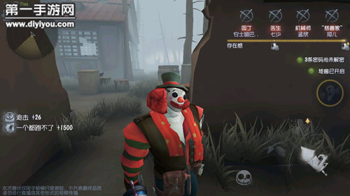
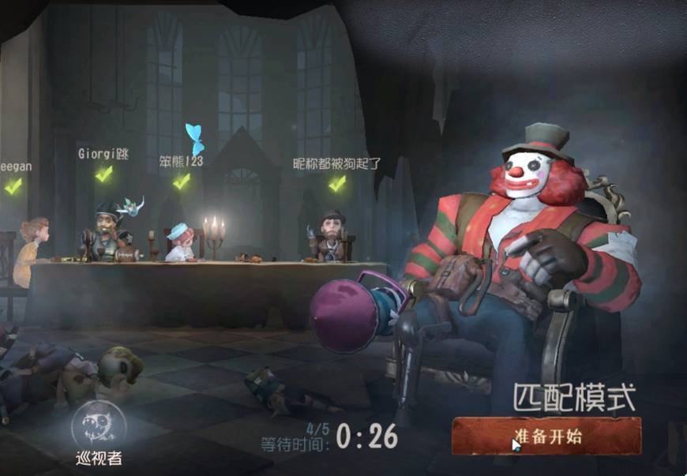

小丑

【人物介紹】
名字：裘克
裘克曾經是馬戲團中的當家，天生的哭喪臉使他成為最棒的哭泣小丑。而這種優勢在英俊的微笑小丑瑟吉和美豔的雜技女明星娜塔莉加入馬戲團後，發生了變化。他意識到自己應當轉換一下"職業跑道”。顯然，在獲得一張永恆的笑臉後，裘克能在新的喜劇表演中盡情發揮了。
【能力介紹】
電鋸衝刺（二階段解鎖）：小丑被電鋸帶動向前快速衝刺，摧毀所有阻礙他前進的目標——“狂歡吧！我的鏈鋸夥伴！”
狂歡衝刺（三階段解鎖）：數次親密無間的合作後，小丑使用鏈鋸時能衝刺的更遠，衝刺速度也更快——“狂歡吧！我的鏈鋸夥伴！”
